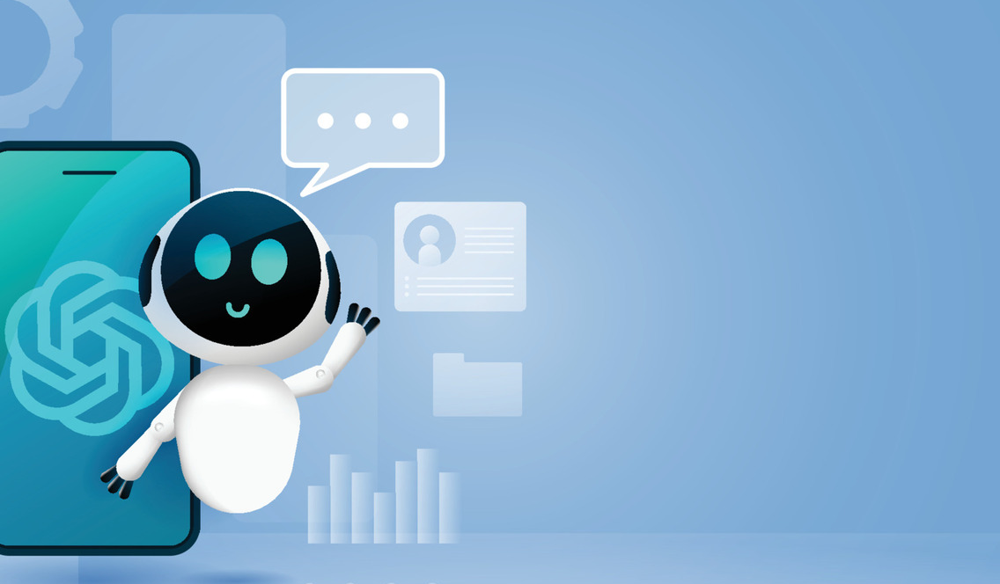

Enable voice-guided project creation from start to vendor assignment
Transforming Real Estate Due Diligence with Voice-First Agentic AI
MKS embedded a production-grade AI-powered voice and chat assistant into a real estate due diligence platform, dramatically simplifying project creation, vendor selection, and inspection workflows.
Overview
Our client operates a real estate due diligence platform serving property developers, environmental consultants, and field inspection vendors across a complex, multi-party workflow. The platform provided deep functionality — but usability had not kept pace with scale, leaving users navigating fragmented screens and repetitive manual processes to complete core tasks.
MKS was engaged to design and build Chat AI — a fully agentic voice and chat assistant embedded natively across all critical platform surfaces. The result was a 5× acceleration in project creation, full automation of six end-to-end workflows, and a measurably improved experience for both project owners and field vendors.
Industry
Real Estate & PropTech
Service Line
Agentic AI Development
Duration
Platform Feature Build
Delivery
MKS Engineering Team
The Challenge
Complex multi-step workflows created friction across every user journey
The platform required users to navigate multiple screens, fill forms manually, and constantly context-switch between dashboard states to complete core tasks — from creating a project and selecting vendors, to assigning contractors and tracking proposal submissions.
- Slow, multi-screen project creation process that frustrated project managers and delayed onboarding
- High drop-off rates mid-workflow due to form complexity and lack of guided navigation
- Significant friction in the vendor journey — from viewing RFP invitations to submitting proposals and tracking status
- No contextual memory between sessions, forcing users to re-enter repeated information on every project
- Mobile field users lacked an efficient interface for voice-driven task execution on-site
The Objective
Deliver a conversational AI layer that simplifies workflows without sacrificing platform depth
The client's goal was to make the platform dramatically easier to use for all user types — without stripping the functionality that made it valuable. They needed a solution that could guide users through complex workflows conversationally, reduce repetitive data entry, and serve field workers on mobile through voice commands.
Automate six critical end-to-end workflows via conversational AI
Simplify the vendor journey for RFP response and proposal tracking
Build contextual memory to eliminate repeat data entry across sessions
Deliver a mobile-first voice interface for field users
Integrate natively with existing platform APIs without architectural disruption
The Solution
A fully agentic voice and chat assistant, embedded across all platform surfaces
MKS designed and delivered Ocean AI — not a simple chatbot, but a production-grade agentic assistant capable of completing multi-step platform tasks on behalf of users through natural language or voice. The assistant was embedded as both a keyboard-shortcut-accessible command palette on desktop and a persistent voice-first interface on mobile.
- Built on OpenAI's multimodal models for real-time speech-to-text and text-to-speech for human-like responses
- Built-in contextual project memory which recognises prior projects and auto-populates fields (location, category, timeline) from past activity, eliminating repetitive data entry
- Designed a structured confirmation flow — the assistant guides users step-by-step and presents a full Project Summary before any irreversible action is committed
- Delivered mobile-first voice coverage for field users, enabling end-to-end workflow execution without touching a form

The Impact
Faster workflows, higher engagement, and dramatically reduced friction across all user journeys
The AI assistant was delivered as a fully functional agentic assistant embedded across all key platform surfaces. The transformation was observed immediately across workflow speed, user engagement, and operational efficiency.
5x
Faster project creation via voice versus manual form-filling
6
End-to-end workflows fully automated via conversational AI
60-70%
Reduction in repeat data entry through contextual project memory
Zero
Context-switching required — full workflows completed within the assistant
↑ UX
Measurably improved platform session depth and task completion rates
Mobile
Full voice command coverage delivered for field users on mobile devices